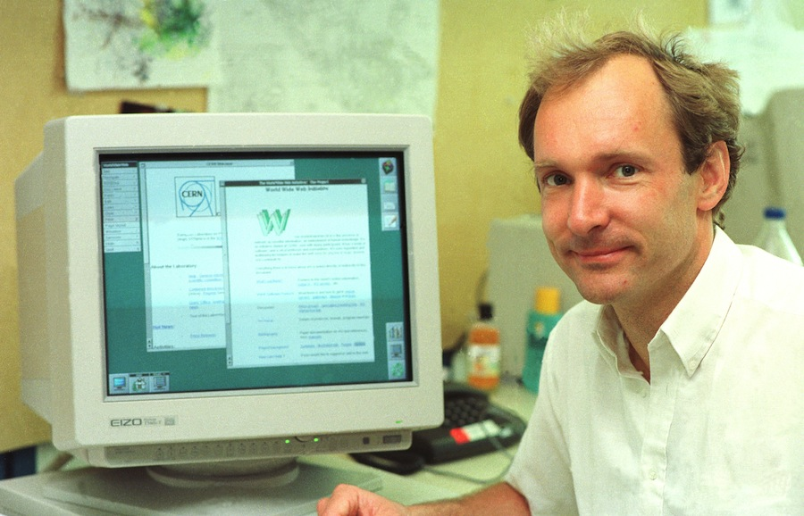

Համացանցի հիմնադիրը
|

|
Գիտնականը, 1989 թ.-ին, CERS-ի (Միջուկային հետազոտությունների եվրոպական լաբորտաորիա) համար աշխատելով փաստաթղթերի ներքին փոխանակման ENQUIRE նախագծի վրա, ստեղծեց համաշխարհային հիպերտեքստային նախագիծը, որը հետագայում հաստատվեց և ստացավ World Wide Web (Համաշխարհային Սարդոստայն) անվանումը: Բեռներս-Լիի հանճարեղ գյուտի համար հիմք է հանդիսացել հիպերհղումների միջոցով փաստաթղթերի հիպերտեքստային փոխանակման համակարգը. HTTP (հիպերտեքստային փոխանակման արձանագրություն), նույնացուցիչ URI (և նրա տարատեսակ URL), լեզու HTML: Գիտնականը ստեղծել է աշխարհի առաջին վեբ սերվերը՝ «httpd», և առաջին համացանցային կայքը՝ http://info.cern.ch, որ ստեղծվել է 1991 թ.-ին: Հանճարը ստեղծել է նաև առաջին համացանցային զննարկիչը (internet-browser) NeXT համակարգչի համար:
1994 թ.-ին Թիմ Բեռներս-Լին Մասաչուսեթսի Տեխնոլոգիական Ինստիտուտում ստեղծել է Համաշխարհային Սարդոստայնի Կոնսորցիումը, որը նա ղեկավարում առ այսօր:
Համացանցի հիմնադիրն այժմ ցանկանում է ստեղծել իմաստաբանական (սեմանտիկ) սարդոստայնը, որը համակարգիչների փոխհամագործակցությունը կբարձրացնի նոր՝ անհավատալի մակարդակի. համակարգիչները պետք է միմյանց հետ տեղեկատվական փոխանակություն կատարեն՝ առանց մարդու միջնորդության: Հնարավոր է, որ դա կբերի Համաշխարհային Արհեստական Գիտակցության ստեղծմանը: